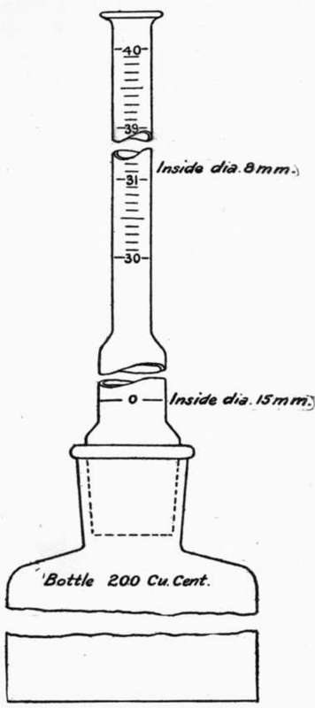

Art. 13. Specific Gravity Or True Density
Description
This section is from the book "Cement And Concrete", by Louis Carlton Sabin. Also available from Amazon: Cement and Concrete.
Art. 13. Specific Gravity Or True Density
62. The apparent density or weight per cubic foot is influenced to such an extent by the degree of fineness of the cement that this test has been almost superseded by the test for specific gravity. Although the true density, or specific gravity, is not affected by the fineness, it is influenced by the composition, the degree of burning, and the age, or amount of aeration of the sample.
The method commonly employed in this test consists in determining the absolute volume of a given weight of the cement powder by measuring the amount of liquid which it will displace. A simple form of apparatus may be constructed in any laboratory as follows: In a wide mouth bottle, having straight sides and holding 200 c.c. or more, fit a perforated cork. Through the cork slip a burette graduated in cubic centimeters from 0 to 50, placing the zero end down. Fill the bottle and the tube up to the zero mark, with some liquid such as turpentine, benzine or kerosene oil, but preferably benzine (62° Baume naptha). By means of a funnel in the top of the burette, add slowly 100 grams of cement; then jar the bottle to remove air bubbles and read the burette. This reading, x, represents the volume of 100 grams of cement; and 100, the volume of 100 grams of water, divided by x gives the specific gravity of the sample.
1 "Cement for Users," by H. Faija, p. 54.
2 " Record of Tests of Cements for Boston Main Drainage Works," Trans. A. S. C. E., Vol. xiv, p. 144.
63. Among other forms of apparatus which are also of simple construction and tend to facilitate the test, may be mentioned the following: —
M. Candlot1 devised an apparatus consisting of a graduated tube terminating in a bulb at the upper end, the lower end of the tube being ground to fit the neck of a flask. The tube and flask being disconnected, sufficient liquid is placed in the bulb so that when connected with the flask and placed upright, the level of the liquid will be at or near the zero mark on the tube. The actual level of the liquid is read after standing a few minutes; the apparatus is again inverted and the flask disconnected to allow of the introduction of 100 grams of cement. The flask is then replaced and the contents of the apparatus well shaken to expel air-bubbles. When the latter have been completely expelled, the flask is placed upright, and after standing a short time the level of the liquid is again read, the difference between the two readings indicating the absolute volume of 100 grams of the cement powder.
The apparatus devised by M. H. LeChatelier2 consists of a flask of a capacity of about 120 c.c, and having a neck some 20 c. in length, halfway up which is a bulb having a capacity of 20 c.c. Near the bottom of the tube, or flask, is the zero mark, and above the bulb the tube is graduated for a length corresponding to a capacity of 3 c.c, each graduation representing .1 c.c. The diameter of the tube is about 9 mm. The zero mark on the tube is below the bulb. The method of operation is similar to that described above.
1 "Ciments et Chaux Hydrauliques," par. E. Candlot.
2 "Report of Commission des Methode d'Essai des Materiaux de Construction," The Engineer (London); Illustrated also in Meade's "Examination of Portland Cement," Spaulding's "Hydraulic Cement," and Engineering News, January 29, 1903.
64. The following style of apparatus (see Fig. 1) is suggested as a very convenient form, and one which may be used for another test soon to be described. In this form, the flask, of a capacity of about 200 c.c, has straight sides and a flat bottom. The lower part of the burette is of large diameter, about 15 mm., to allow the cement to pass readily, while the upper portion is made smaller, about 8 mm., to permit more accurate reading, and is graduated from 30 c.c to 40 c.c, the divisions being 0.1 c.c Half divisions may be estimated. The zero mark is in the larger part of the burette, but it is less difficult to make an accurate reading at the zero mark, since at the time of taking this reading the liquid is clear; this mark should entirely surround the burette. The mouth of the bottle and the lower end of the burette should be ground to fit, and a ground glass stopper should form a part of the apparatus, A long pipette will be found convenient for adjusting the level of the liquid to the zero mark.
65. Turpentine is frequently employed for this test, but it is somewhat inconvenient to use, since its volume is so sensitive to changes in temperature. This sensitiveness renders it imperative that the temperature at the time of taking the final reading be the same as when the initial reading is taken, or that a correction be applied. To assure this condition the apparatus should be immersed in a water bath, and the temperature of the cement should be the same as that of the turpentine. The use of water in the apparatus does not offer this inconvenience, but it is possible that the hydration of the cement during the experiment might be sufficient to so affect the volume as to change the result, especially with quick-setting cements. Light oils, such as benzine and kerosene, are rather volatile, but the former (62° Baume naptha) is recommended in the preliminary report of the Committee of the American Society of Civil Engineers. With the precautions mentioned above, turpentine may be used with good results; that which has been dried by standing over cement or quicklime is to be preferred.
Fig. 1. SPECIFIC GRAVITY APPARATUS.
66. This test may be extended to give interesting and valuable results, in the following manner: When the cement has settled in the bottle, leaving the liquid clear, pour off a portion of the latter and replace the burette by a glass stopper. Thoroughly agitate the remaining liquid and cement until the latter is in suspension; allow the cement to settle again without disturbance, and it will be found that it is graded in the bottle according to its fineness, the coarsest particles being at the bottom. With Portland cement, if a portion of the sample is underburned it will appear as the top layer, and be indicated by its yellow color. It will also be interesting to note what proportion of the cement is so fine that the separate grains are indistinguishable. That the bottle should have straight sides and a flat bottom is to accommodate this part of the test, which also dictates the use of some other liquid than water.
67. Effect Of Composition, Aeration, Etc
It has been said above that the composition of a cement affects its specific gravity, a highly limed cement having a higher density. On this account an analysis for lime is valuable in connection with this test, in order to determine whether a high specific gravity is due to a high percentage of lime or to hard burning.
The age, or aeration of a sample affects its specific gravity because of the absorption of water from the atmosphere. The absorption of two per cent, of water is sufficient to lower the specific gravity from 3.125 to 3.000. The following may be given as illustrating this point: a certain sample of natural cement when taken from the barrel had a specific gravity of 3.106; after it had been spread out in the air for two months its specific gravity was 3.000. A quantity of this aerated cement weighing 120 grams was placed in an iron vessel and heated over an oil stove for about one hour; at the end of this time the cement had lost two grams in weight. The specific gravity of the fresh cement being 3.106, 118 grams would have an absolute volume of 38 c.c; two grams of water would occupy 2 c.c, hence 120 grams of the aerated cement would occupy 40 c.c, and 120/40 = 3.00, the specific gravity of the aerated cement as found above. It is not always possible to thus drive off all of the water absorbed, since a portion of it may enter into combination with the cement; but a sample should always be heated for at least thirty minutes at a temperature of 100° C. before making the test for specific gravity, and should any appreciable loss of weight occur, it is an indication of aeration.
68. A determination of the specific gravity is primarily a test for burning, but it may also be of much value in detecting adulterations, as with blast furnace slag or ground limestone. An admixture of 10 per cent, of either of these substances would suffice to lower the specific gravity from 3.15 to about 3.10. The specific gravity of Portland cement ranges from 2.90 to 3.25, but a first-class product should not show a lower specific gravity than 3.05. If fresh Portland gives a result below this it is probably either underburned or underlimed, or, perhaps, has been adulterated.
The specific gravity of natural cements has been found to vary from 2.82 to 3.25. The specific gravity Of one sample of underburned natural cement was found to be lower than a sample of the same brand which was overburned, but it seems very doubtful whether this is true of other brands made from rock of a different character. It was also found that the specific gravity of the coarse particles of some natural cements is lower than that of the fine particles (see Table 10, Art. 15), while the opposite is true in the case of Portland cements.
No general rules can be given at present for the interpretation of this test that are applicable to all natural cements; it is thought that the test will be of value in comparing samples of the same brand, though it seems doubtful whether it will prove of value in comparing one brand of natural cement with another, since it is quite probable that the interpretation may-vary with the variety of rock used in the manufacture. The value of the test for Portland cements is, however, well established.
Continue to:
- prev: Art. 12. Weight Per Cubic Foot Or Apparent Density
- Table of Contents
- next: Chapter VI. Sifting And Fine Grinding. Art. 14. Fineness